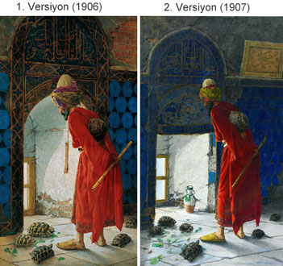

Kaplumbağa Terbiyecisi Tablosu
Bir Osmanlı Aydını: Osman Hamdi Bey
Her ne kadar Osmanlı Ressamlar Cemiyeti tarafından çıkartılan gazetenin on yedinci sayısında tablonun adı “Kaplumbağalar ve Adam” olarak geçse de, tabloya daha sonra yaygın olarak bilinen ‘Kaplumbağa Terbiyecisi’ adı verilmiştir. Kaplumbağa Terbiyecisi, bilinenin aksine tek bir tablo değildir. Birçok uluslararası ünlü oryantalist ressam gibi Osman Hamdi Bey’de beğendiği Kaplumbağa Terbiyecisi tablosunun 1906 ve 1907 yıllarında iki farklı versiyonunu çizmiştir.
Resim de belinde sıkı bir kemerle bağlanmış kırmızı uzun bir giysi giyen sakallı bir derviş, mavi çinilerle kaplı eşyasız ve bakımsız bir odada, yarı arkası dönük şekilde dikilmektedir. Ellerini arkasında kavuşturmuş olan bu adamın elinde bir ney bulunmaktadır. Başına, etrafına gelişigüzel bir yemeni sararak arakiye takmıştır. Sırtında ise bir nakkare asılıdır ve buna bağlı bir mızrap da boynundan aşağıya sarkmaktadır. Dervişin ayaklarının yanında, yerdeki yaprakları yemekte olan kaplumbağalar vardır. Odanın duvarlarındaki sıvalar ve çiniler yer yer dökülmüştür. Tablonun tek ışık kaynağı dervişin önündeki alçak penceredir.
Bir Dervişin Çağdaşlaşma Mücadelesi
Resmin açıklamasına gelince; mekan 1390’ların sonunda tamamlanan ve Osmanlı Mimarisinin en değerli örneklerinden biri sayılan Bursa’daki Yeşil Cami’nin ikinci katıdır. Terbiyeci olarak tasvir edilen derviş ise ressamın kendisinin yaşlanmış halidir. Osman Hamdi Bey’in bu tablosu pek çok uzman tarafından geri kalmış bir toplumu çağdaşlaştırmaya çalışan bir aydının yorgun hâlini anlattığı şeklinde yorumlanmıştır. Kaplumbağaların esin kaynağının, Lale Devri’ndeki Sadabad eğlenceleri sırasında, hava karardıktan sonra sırtlarına mum konularak serbest bırakılan kaplumbağalar olduğu düşünülmektedir. Yeşil yaprakları yiyen bu kaplumbağalar, derviş tarafından eğitilmektedir.
Yaşamı boyunca eğitime önem veren Osman Hamdi Bey, padişahlıkla yönetilen Osmanlı Dönemi‘nde sanatın gelişmesi için var gücüyle çalışmıştır. Tablodaki yaratılışı itibariyle yavaş olan kaplumbağa, “tembelliği” temsil etmekte ve Osman Hamdi tembelliği felsefe edinmiş bu insanları eğitmeye çalışmaktadır. Osman Hamdi‘nin kaplumbağaları eğitirken kullandığı yöntem ise sanatın başka bir dalı olan müziktir. Bu da yine ressamın sanata olan aşkını ve gelişim için sanatın gerekliliğine duyduğu inancı ifade etmektedir. Ancak sıvası dökülmüş duvarlar Osman Hamdi‘nin “çağdaşlaşmak istemeyen toplum” anlatısını yansıtırken, dervişin umutsuz ve yorgun haliyse, ‘derviş sabrı’ denilen o yüce duygunun dahi sınırlı olduğunu anlatmaktadır. Hatta bazı yorumlara göre terbiyecinin, kaplumbağaları eğitmekte kullanacağı neyi üfleyemeyip arkasında tutması, Osman Hamdi Bey’in kaplumbağalar ile temsil edilen halkı eğitme kaygısından artık vazgeçtiği şeklinde de yorumlanmıştır.